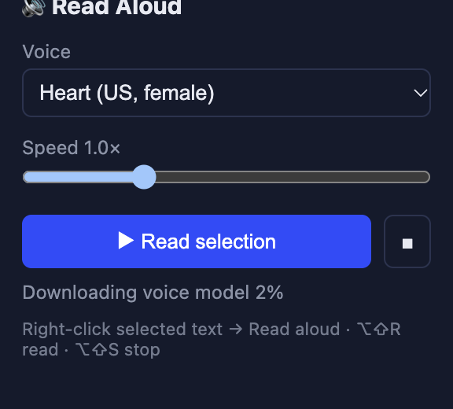
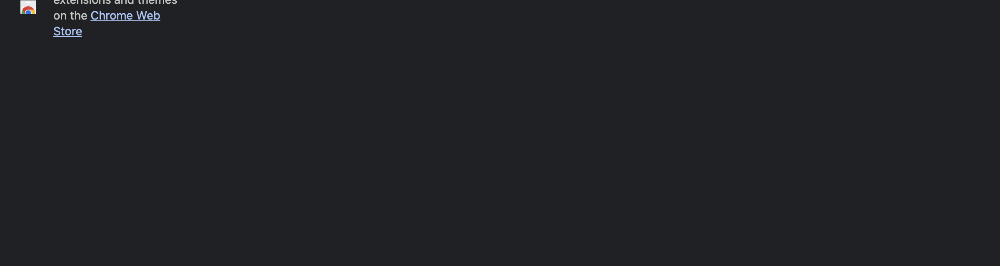
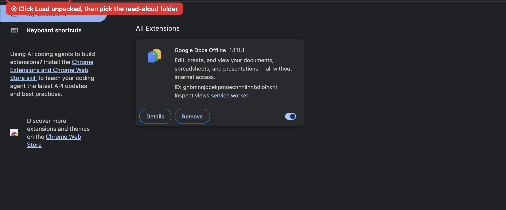
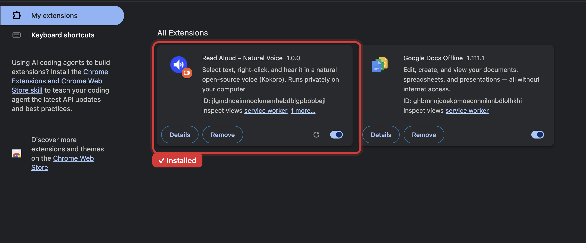

Read Aloud – Natural Voice
Select text, right-click, and hear it in a natural voice instead of the usual robotic one. Like Speechify, but free and private.
Download for Chrome & BraveFree · about 9 MB · Mac & Windows · also works in Edge
- 🗣️ Natural voicePowered by Kokoro, one of the best open-source voices
- 🔒 PrivateThe voice runs on your computer. Your text never leaves it.
- ✈️ Works offlineAfter the first use, no internet needed
- 🎚️ 7 voicesUS & UK, male & female, with speed control

Install (about 5 minutes)
-
Download
-
Unzip it and keep the folder
Mac: double-click the zip. Windows: right-click → Extract All… → Extract.
Move the
read-aloudfolder to your Documents folder. The browser loads the extension from it, so don't delete it. -
Open the extensions page
Type in the address bar and press Enter:
chrome://extensions(Chrome),brave://extensions(Brave) oredge://extensions(Edge). -
Turn on "Developer mode"
The switch in the top-right corner (left side in Edge). It only allows extensions that aren't from the store.

-
Click "Load unpacked" and pick the folder
Select the
read-aloudfolder itself (not a file inside it) and click Select / Open.
-
Done. Pin it.
Click the puzzle-piece 🧩 at the top right, then the pin 📌 next to Read Aloud – Natural Voice.

How to use
- Highlight text on any page → right-click → Read aloud.
- The first time, it downloads the voice (about 330 MB, usually under a minute). After that it starts almost instantly.
- Click the blue speaker icon in the toolbar to change voice or speed, pause or stop.
- Shortcuts: Alt+Shift+R reads, Alt+Shift+S stops (Mac: Option+Shift+R / S).
Troubleshooting
- "Manifest file is missing or unreadable": you picked the wrong folder. Pick the one that directly contains
manifest.json. - No "Read aloud" in the menu: select text first, and reload pages that were open when you installed.
- Nothing happens the first time: it's downloading the voice. Click the speaker icon to see progress.
- Doesn't work on some pages: browsers block extensions on their own pages (like
chrome://and the Web Store). - Updating: download the new zip, replace the folder's contents, then click ↻ on the extension's card.
Privacy
No servers, no accounts, no tracking. Your text is processed on your computer. The only network request is a one-time download of the open-source voice model from Hugging Face. English only for now.